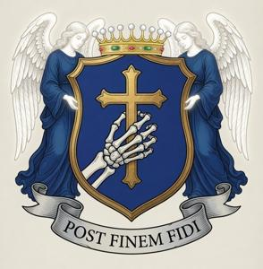

Дом Олещан - ЧЕРНОВИК
{kind=link}

Графы Олещан (згур. Olesczan, дегл. Oleŝan, глаг. ⰑⰎⰅⰛⰀⰐ) - один из древнейших знатных родов Бывшей Верхней Паннонии. В XVIII и XIX веках их представители часто занимали высшие военные, гражданские и церковные должности в стране; не такие богатые, как их вечные соперники Брегови, Олещаны благодаря этому оставались одним из самых влиятельных дворянских родов Верхней Паннонии габсбургской эпохи.
Contents
Ранняя история
(...)
Геральдика, репутация и традиции
(...)
Главы дома
Список всех глав дома с начала XVIII в.
| № п/п | Имя | Годы жизни | Годы во главе дома |
|---|---|---|---|
| 1 | . | 1682-1749 | 1706-1749 |
| 2 | . | 1701-1768 | 1749-1768 |
| 3 | . | 1725-1800 | 1768-1800 |
| 4 | . | 1747-1818 | 1800-1818 |
| 5 | Бенедыкт | 1770-1849 | 1818-1849 |
| 6 | . | 1794-1869 | 1849-1869 |
| 7 | . | 1818-1891 | 1869-1891 |
| 8 | Целестын | 1842-1920 | 1891-1920 |
| 9 | . | 1868-1944 | 1920-1944 |
| 10 | . | 1892-1958 | 1944-1958 |
| 11 | . | 1913-1980 | 1958-1980 |
| 12 | . | 1933-2010 | 1980-2010 |
| 13 | . | 1952- | 2010- |
Видные главы дома
(...)
Другие известные представители
(...)
Известные женщины
(...)
Категории: Персоналии, Знать, Черновики